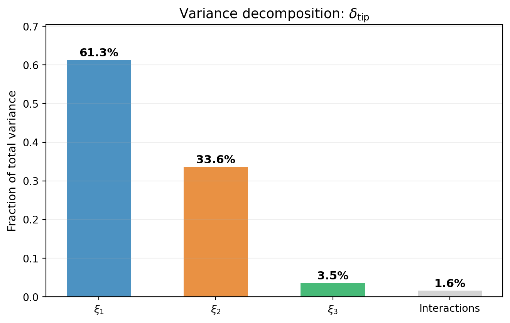
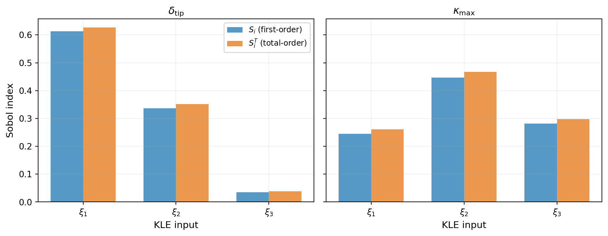
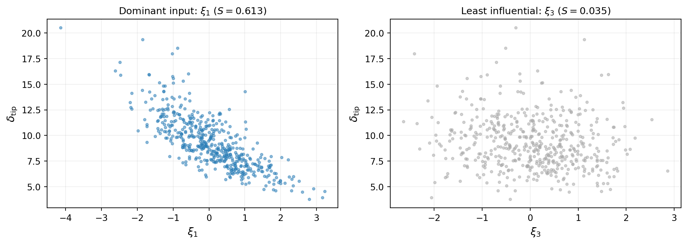

Sensitivity Analysis
PyApprox Tutorial Library
Variance decomposition and Sobol indices: identifying which uncertain inputs drive output variability.
TipDownload Notebook
Learning Objectives
After completing this tutorial, you will be able to:
- Explain Sobol sensitivity indices as a decomposition of output variance into input contributions
- Distinguish first-order indices (direct effects) from total-order indices (effects including interactions)
- Interpret sensitivity results to guide resource allocation for uncertainty reduction
Prerequisites
Complete Forward UQ before this tutorial.
Motivation: Which Parameters Matter?
Forward UQ tells us how much total uncertainty there is in a model’s outputs. Now we ask a different question: which uncertain inputs are responsible for that variability?
If we can identify the dominant inputs, we can:
- Focus resources on reducing those uncertainties (better measurements, tighter manufacturing tolerances)
- Fix unimportant inputs at nominal values, simplifying the model
- Understand the model’s input-output structure
Sensitivity Analysis (SA) provides a principled framework for answering this question.
Variance Decomposition (ANOVA)
The key idea behind variance-based sensitivity analysis is Analysis of Variance (ANOVA). The total output variance can be decomposed into contributions from individual inputs and their interactions:
\[ \Var_{\params}[q] = \sum_{i} V_i + \sum_{i<j} V_{ij} + \cdots + V_{1,2,\ldots,\dparams} \]
where:
- \(V_i = \Var_{\theta_i}[\E_{\theta_{\sim i}}[q | \theta_i]]\) is the variance due to input \(\theta_i\) alone
- \(V_{ij}\) is the additional variance from the interaction between \(\theta_i\) and \(\theta_j\)
- Higher-order terms capture three-way and beyond interactions
Figure 1 shows how the variance of tip deflection decomposes across the three KLE inputs.
First-Order and Total-Order Indices
The ANOVA decomposition motivates two key measures of input importance.
First-Order Sobol Index
The first-order Sobol index \(\Sobol{i}\) measures the fraction of output variance explained by input \(\theta_i\) acting alone:
\[ \Sobol{i} = \frac{V_i}{\Var_{\params}[q]} = \frac{\Var_{\theta_i}[\E_{\theta_{\sim i}}[q | \theta_i]]}{\Var_{\params}[q]} \]
- \(\Sobol{i} \approx 1\): input \(i\) explains nearly all variance by itself
- \(\Sobol{i} \approx 0\): input \(i\) has little direct effect on variance
Total-Order Sobol Index
The total-order Sobol index \(\SobolT{i}\) captures the total contribution of input \(\theta_i\), including all interactions with other inputs:
\[ \SobolT{i} = 1 - \frac{\Var_{\theta_{\sim i}}[\E_{\theta_i}[q | \theta_{\sim i}]]}{\Var_{\params}[q]} \]
where \(\theta_{\sim i}\) denotes all inputs except \(\theta_i\).
Key properties:
- \(\SobolT{i} \geq \Sobol{i}\) always
- If \(\SobolT{i} \approx \Sobol{i}\): input \(i\) has few interactions with other inputs
- If \(\SobolT{i} \gg \Sobol{i}\): input \(i\) participates in strong interactions
- \(\sum_i \Sobol{i} \leq 1\) (equality iff no interactions)
- \(\sum_i \SobolT{i} \geq 1\) (equality iff no interactions)
Figure 2 shows both indices for the beam QoIs that have nonzero variance: tip deflection and maximum curvature.

NoteWhy is \(\sigma_{\mathrm{int}}\) missing?
The integrated bending stress \(\sigma_{\mathrm{int}} = \int_0^L \sigma(x)\, dx\) has zero variance — it is constant regardless of the KLE inputs. This is because the internal bending moment distribution \(M(x)\) is determined entirely by the applied load and boundary conditions (static equilibrium), not by the stiffness field \(EI(x)\). The stiffness affects how much the beam deflects and how curvature distributes, but the total integrated stress \(\int M(x)\, y/I(x) \cdot dx\) simplifies to a load-dependent constant for this model. A QoI with zero variance has undefined Sobol indices, so it is omitted from the sensitivity analysis.
Visual Confirmation
A quick visual check supports the sensitivity indices. Figure 3 shows scatter plots of the QoI against the most influential and least influential KLE inputs. The dominant input shows a clear functional trend, while the non-influential input shows no pattern.

Key Takeaways
- Variance decomposition splits output variance into contributions from individual inputs and their interactions
- First-order \(\Sobol{i}\) measures the direct (additive) effect of input \(i\)
- Total-order \(\SobolT{i}\) measures the total effect including all interactions — use this for deciding which inputs to fix
- \(\sum_i \Sobol{i} < 1\) indicates the presence of interactions between inputs
- A QoI with zero variance (e.g., determined by static equilibrium) has undefined Sobol indices
Exercises
(Easy) From Figure 2, which KLE input is most important for each QoI? Do the rankings differ between tip deflection and maximum curvature?
(Medium) For a given QoI, what does it mean if \(\SobolT{i} \gg \Sobol{i}\)? Use Figure 2 to identify whether any input exhibits strong interactions.
(Challenge) The sum \(\sum_i \Sobol{i}\) measures how additive the model is. Compute this sum for both QoIs. Which has stronger interactions? What physical mechanism might explain this?
Next Steps
Continue with:
- Sobol Sensitivity Analysis — Monte Carlo estimation of Sobol indices (no surrogate needed)
- PCE-Based Sensitivity — Detailed API for PCE sensitivity including interaction terms
- Morris Screening — Cheap screening to identify important inputs before Sobol analysis